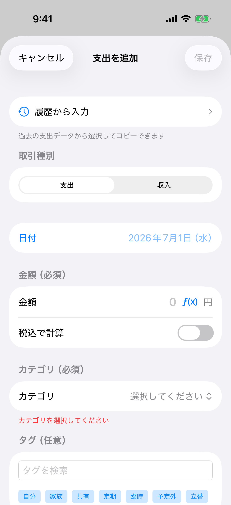

支出・収入の登録方法
支出・収入の登録方法¶
方法1: 手動で追加¶
手動入力フォームでは、金額・カテゴリ・日付・店名・支払方法・メモなどを入力して記録します。

手順詳細¶
1. ➕ボタンをタップ
ホーム画面右上の「+」ボタン → 「手動で追加」を選択
1.5 履歴から入力を活用 【便利機能】
新規作成画面の最上部に「履歴から入力」ボタンが表示されます
タップすると過去の支出データから選択できます
【履歴選択画面の機能】
• 日付でグループ化された支出一覧
• カテゴリでフィルタ
• タグでフィルタ
• 店名・説明で検索
【コピーされる項目】
• 金額
• カテゴリ
• 店舗名
• 支払方法
• メモ
• タグ
【コピーされない項目】
• 日付（現在日時が自動設定されます）
• 写真データ
※選択後、必要に応じて金額や日付を変更してから保存してください
2. 取引種別を選択 【必須】
• 支出（デフォルト）
• 収入
3. 日付を選択
デフォルト: 今日
カスタム:
• ボタンをタップするとカレンダーモーダルが表示
• グラフィカルなカレンダーで日付を選択
• 日付をタップすると自動的に閉じる
• 日本語カレンダー（曜日付き）で表示
4. 金額を入力 【必須】
例: 1580
右側の電卓アイコンをタップすると電卓で計算できます
計算結果を「確定」すると金額欄に反映されます
4.5 定価を入力【オプション】（支出のみ）
セール前の定価を記録できます
電卓の「定価登録」で入力結果を定価欄に反映できます
定価と支払額が異なる場合は一覧で割引表示されます
5. 税込で計算【オプション】（新規作成時のみ）
トグルをONにすると:
• 入力した金額に設定された税率（デフォルト10%）が加算されます
• 計算後の税込価格がリアルタイムで表示されます
• 例: 1000円 → 税込 1,100円
※設定画面で税率を変更できます
6. カテゴリを選択 【推奨】
選択肢:
• 食費 • 外食 • 交通
• 趣味 • 日用品 • 衣服
• 美容 • 医療 • 教育
• 通信 • 光熱費 • 住居
• 保険 • その他
7. タグを選択 【オプション】
複数のタグを選択可能
例: プライベート、仕事、家族
8. 支払方法を選択
デフォルト選択肢:
• 現金 • クレジットカード
• 電子マネー • 銀行振込
• その他
※設定の「支払方法管理」からカスタム支払方法を追加できます
9. 店舗名を入力 【オプション】
例: セブン-イレブン
10. メモを入力 【オプション】
例: 朝食購入
11. 保存をタップ
方法2: AI JSONで追加¶
この方法は、ChatGPTなどのAIで生成したJSONを貼り付けて、一括で支出を登録できます。
ChatGPTプロンプト例¶
以下のレシートの内容をJSON形式で出力してください。
【レシート内容】
セブン-イレブン
おにぎり ¥150
お茶 ¥120
合計 ¥270
【出力形式】
[
{
"date": "2026-01-07",
"amount": 270,
"category": "食費",
"merchant": "セブン-イレブン",
"paymentMethod": "現金"
}
]
JSON形式¶
対応フォーマット (4種類)
- 配列形式 【推奨】
[
{
"date": "2026-01-07",
"amount": 1580,
"category": "食費",
"merchant": "セブン-イレブン"
}
]
- 単一オブジェクト
{
"date": "2026-01-07",
"amount": 1580,
"category": "食費"
}
- items配列
{
"items": [
{ "date": "2026-01-07", "amount": 1580 }
]
}
- expenses配列
{
"expenses": [
{ "date": "2026-01-07", "amount": 1580 }
]
}
カテゴリマッチング¶
エイリアス例: - "食事" → "食費" - "ランチ" → "外食" - "バス" → "交通"
AI JSON利用のベストプラクティス¶
登録モードの使い分け¶
AI JSON画面では「支払い単位」と「明細分割」を選べます。
明細分割モードではitems配列の明細を編集して保存でき、明細ごとに支出が作成されます。
合計と明細合計が一致しない場合は、明細を手動で修正してください。
明細入力には定価（任意）を追加でき、割引がある場合は一覧で定価と実支払額が表示されます。
プロンプトテンプレートの活用¶
アプリ内の「プロンプトテンプレートをコピー」ボタンを使用すると、最適化されたプロンプトがクリップボードにコピーされます。このテンプレートは以下の特徴があります：
- null値の許容: 日付や金額が不明な場合、nullにして後で手動入力可能
- 複数明細対応: レシート内の個別商品も
items配列で記録 - 複数取引の扱い: 紙の家計簿など複数の取引が含まれる場合、最初の1件のみ抽出
日付・金額が不明な場合の対処¶
例: 古いレシートで日付が読み取れない場合
{
"occurred_at": null,
"total": 1234,
"merchant": "セブン-イレブン"
}
→ アプリで警告が表示され、DatePickerで日付を入力できます
複数明細の活用¶
レシートの個別商品を記録することで、後で何を購入したか確認できます：
{
"schema_version": "1.0",
"type": "expense",
"expense": {
"occurred_at": "2026-01-09",
"total": 1234,
"items": [
{"name": "牛乳", "amount": 238},
{"name": "食パン", "amount": 320},
{"name": "卵", "amount": 298}
]
}
}
注意: 明細のamountがnullの場合、その明細は保存されません（警告が表示されます）
紙の家計簿や複数日の記録の扱い¶
1枚の画像に複数日・複数店舗の記録がある場合：
- AIには「最初の1件のみ抽出」を指示
- extra.notesに「複数の取引が検出されました」と記載してもらう
- 2件目以降は別途JSONを生成してもらう
エラー時の対処¶
症状: JSONをペーストしても「必須項目が不足」エラー
対処法: 1. 日付フィールドを確認→null の場合は手動入力 2. 金額フィールドを確認→null の場合は手動入力 3. カテゴリを選択（必須）
方法3: レシートで追加 (iOS専用)¶
レシートをカメラでスキャンして自動的に支出を登録します。
手順詳細¶
1. レシートで追加を選択
ホーム画面右上の「+」ボタン → 「レシートで追加」を選択
2. カメラで撮影
• レシートを平らに置く
• レシート全体が画面に収まるように調整
• シャッターボタンをタップ
• 複数ページも撮影可能
3. OCR処理 (自動)
• 文字認識（日本語・英語対応）
• データ抽出
- 金額（合計を自動検出）
- 店舗名（最初の数行から推定）
- 日付（複数フォーマット対応）
4. 結果確認
抽出されたデータ:
✓ 金額: ¥1,580
✓ 店舗名: セブン-イレブン
✓ 日付: 2026年1月7日
5. 登録モードを選択 【任意】
• 支払い単位: 合計金額を1件の支出として登録
• 明細分割: 明細ごとに複数の支出として登録
6. カテゴリと支払方法を選択
7. 保存
AIによる読み取り精度の向上¶
「AI機能を使う」がONの場合、OCRで読み取ったテキストをAIがさらに解析し、金額・日付・店舗名・カテゴリ・支払方法を自動で補完します。使用するエンジンによって解析方法が異なります。
- Apple Intelligence: OCRで読み取ったテキストをAIが解析します。
- ローカルAIモデル: OCRテキストに加えて、レシートの画像そのものをAIが直接読み取ります（マルチモーダル解析）。文字認識だけでは崩れやすい複雑なレシートや、細かい明細の読み取り精度が向上します。
エンジンの切り替えや導入方法は「設定機能の使い方 → ローカルAIモデル」を参照してください。
対応レシート¶
| レシートタイプ | 対応 | 備考 |
|---|---|---|
| コンビニ | ✅ | 高精度 |
| スーパー | ✅ | 高精度 |
| レストラン | ✅ | 中精度 |
| 手書き | ⚠️ | 低精度（ローカルAIモデルでは改善する場合あり） |
| 感熱紙（古い） | ⚠️ | 薄い文字は認識困難 |
撮影のコツ¶
きれいに認識させるためのポイントです。
良い例 ✅
- 明るい場所で撮影する
- レシートを平らに置く
- レシート全体を画面に収める
- ピントを合わせる
避けたい例 ❌
- 暗い場所での撮影
- 折れ曲がったレシート
- 一部が欠けている
- ピントがボケている
レシートスキャン利用のベストプラクティス¶
日付・金額が読み取れない場合の対処¶
OCRで日付や金額が読み取れなかった場合でも、スキャンを続行できます：
例: ぼやけたレシートで金額だけ読み取れない 1. スキャン実行 2. 警告「金額を読み取れませんでした。下記で金額を入力してください。」が表示 3. 金額欄に手動入力 4. カテゴリ選択 5. 保存
明細（LineItem）の自動抽出¶
明細分割モードでは、OCRまたはAI（Apple Intelligence / ローカルAIモデル）の結果から明細を抽出します。 抽出後は手動で明細を追加・削除・編集できます：
抽出される明細の例:
レシート:
牛乳 1L ¥238
食パン 6枚 ¥320
卵 10個 ¥298
―――――――――――――――
合計 ¥856
アプリでの表示:
明細 (3件) ▼
牛乳 1L ¥238
食パン 6枚 ¥320
卵 10個 ¥298
注意点:
- 金額が読み取れない明細は自動的にスキップされます（警告が表示されます）
- 明細合計と請求金額が一致しない場合は、明細を手動で調整できます
- 明細が不足している場合はApple Intelligenceの簡易リトライを試せます（1回のみ）
- OCRの生テキストはocrRawTextとして保存され、後で確認できます
- 明細の定価（任意）を入力すると、一覧で割引表示されます
読み取り精度を上げるコツ¶
撮影環境: - ✅ 自然光または十分な照明の下で撮影 - ✅ 影が入らないように注意 - ✅ スマートフォンを水平に保つ
レシートの準備: - ✅ シワを伸ばす（可能なら重しで押さえる） - ✅ 汚れや水滴を拭き取る - ✅ 古い感熱紙は早めにスキャン（文字が薄くなる前に）
撮影テクニック: - ✅ レシート全体が画面に収まるように調整 - ✅ ピントが合うまで待つ - ✅ 複雑なレシートは手ブレ防止のため台に固定
OCR結果の確認と修正¶
スキャン後のレビュー画面で以下を確認： 1. 日付: 正しく読み取れているか（間違っている場合はDatePickerで修正） 2. 金額: 合計金額が正しいか（間違っている場合は手動入力） 3. 店舗名: 店舗名が正しいか（通常は最初の数行から推定） 4. 明細: 個別商品が正しく抽出されているか（DisclosureGroupで確認）
認識テキストのコピー: - 認識テキストは行ごとに一覧表示され、行をタップするとコピーできます - 「全体をコピー」で一括コピーも可能です
明細のカテゴリ提案: - 明細分割モードでは、店舗名・明細名からカテゴリ候補が提示されます - 「提案: カテゴリ名」横の「適用」をタップするとカテゴリを反映できます
Apple Intelligence 追加補正（お気に入りプロンプト）¶
追加指示を送ってApple Intelligenceの結果を補正できます： - 追加指示欄に文章を入力し、「追加指示でプロンプト送信」をタップ - 「お気に入り」から登録済みプロンプトを呼び出して即適用 - 初期状態で「再度補完し直してください」が登録済み - 「履歴」から直近の追加指示を再利用可能
保存されるデータ¶
レシートスキャンで保存されるデータ：
- ✅ 基本情報: 日付、金額、店舗名、カテゴリ、支払方法
- ✅ 明細: 個別商品の名前と金額（LineItemとして）
- ✅ OCR生テキスト: 認識されたすべてのテキスト（ocrRawText）
- ✅ ソース情報: receiptOCRとして記録
これにより、後で「何を買ったか」を詳細に確認できます。
よくある問題と対処法¶
問題: 合計金額が正しく認識されない
原因: 小計と税込合計を誤認識
対処法: - レビュー画面で金額を確認 - 間違っている場合は手動で修正 - OCRは「合計」「小計」などのキーワードで判断しますが、100%ではありません
問題: 明細がうまく抽出されない
原因: レイアウトが複雑、文字が小さい
対処法: - 明細分割モードの場合は、明細を手動で追加・修正する - 重要なのは合計金額なので、明細が不正確でも手動調整で対応できます